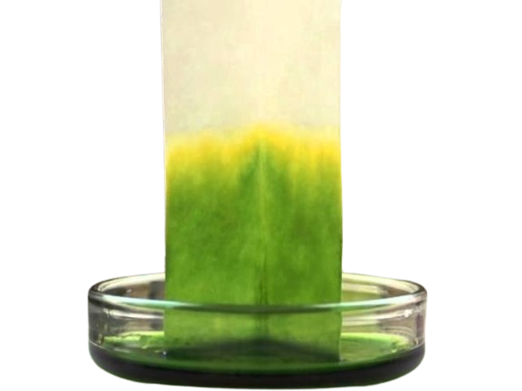
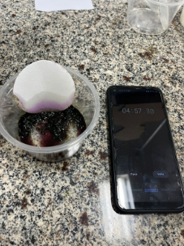
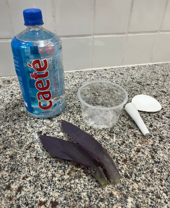
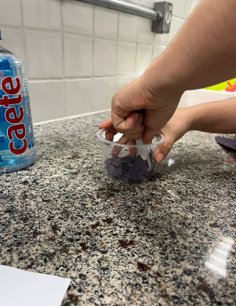
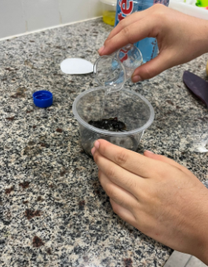
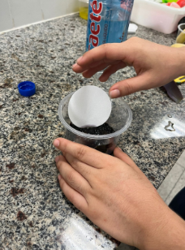

Extração da clorofila

Vídeo tutorial de como fazer a extração da clorofila
Direitos autorais: Prof Karina Timboni

Materiais:
- Folhas de planta;
- Álcool;
- Pipeta de Pasteur;
- Papel filtro;
- Pilão.

Como fazer?
- Macerar as folhas com o auxílio do pilão.

- Com a Pipeta de Pasteur ou com a ajuda de algum outro utensílio adicionar a mistura 10 gotas de álcool.

- Homogeneizar a mistura e adicionar o papel filtro em uma extremidade do pilão e observar o que acontece com ele.
